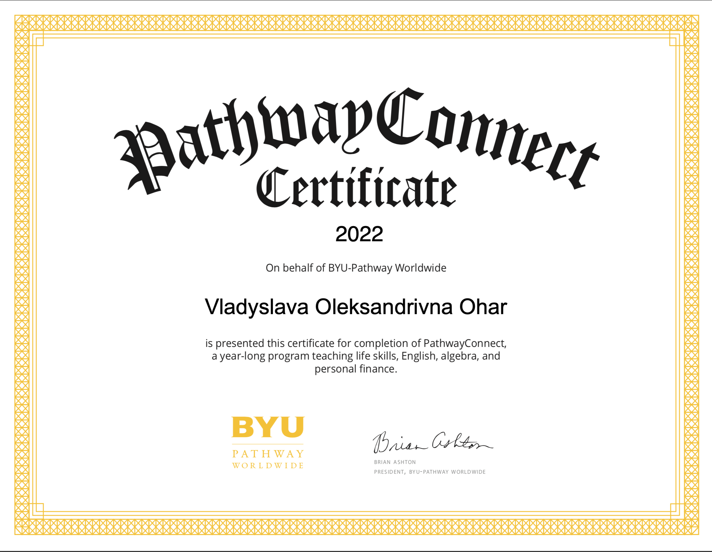

My Background
Education
Khmelnytsky University of Economics and Entrepreneurship:
Bachelor of management (2016-2020)
BYU-Idaho University: Bachelor of Technologies in Programming (2023 - now)
During my studies, I learned essential programming concepts and languages, including data structures, algorithms, Java, Python, and C++. I gained practical experience in coding, debugging, and testing during my coursework, which has prepared me for the challenges of real-world software development.
Soft Skills:
Communication skills: Being able to articulate ideas and thoughts clearly and concisely is important in any professional setting, and even more so in a VC. Good communication skills can help ensure that everyone on the call is on the same page, and can prevent misunderstandings and miscommunications.
Active listening: This is a crucial soft skill for any VC participant. It involves not just hearing what the other person is saying, but also paying attention to their body language, tone of voice, and other cues. Active listening can help build trust and rapport, and can lead to more effective collaboration.
Time management: VCs often have strict time constraints, so being able to manage time effectively is essential. This includes showing up on time, sticking to the agenda, and ensuring that everyone has a chance to speak.
Flexibility: VCs can be unpredictable, and things don't always go according to plan. Being flexible and able to adapt to changing circumstances can be a valuable soft skill, especially when technical issues or other unforeseen problems arise.
Emotional intelligence: Emotional intelligence involves being aware of one's own emotions and the emotions of others. It can help with managing conflicts, building relationships, and promoting collaboration.
Problem-solving: In a VC, it's not uncommon to encounter technical difficulties or other challenges. Being able to approach these challenges with a problem-solving mindset can help keep the conversation on track and prevent frustration.
Professionalism: Finally, professionalism is a soft skill that should not be overlooked. This includes being polite and respectful, dressing appropriately, and maintaining a positive attitude throughout the call.
Technical Skills:
Python: I am proficient in Python and have experience in developing web applications using Flask and Django frameworks.
Flask: I have developed and maintained a web application using Flask during my internship at ABC Company.
Django: I have built a personal portfolio website using Django and deployed it on Heroku.
HTML/CSS: I am familiar with front-end development using HTML/CSS and have implemented responsive designs for client projects.
JavaScript/jQuery: I have experience in implementing dynamic front-end features using JavaScript and jQuery.
SQL/MySQL: I am proficient in SQL and have built and maintained databases for client projects.
Git: I have experience in using Git for version control and collaborating with team members on projects.